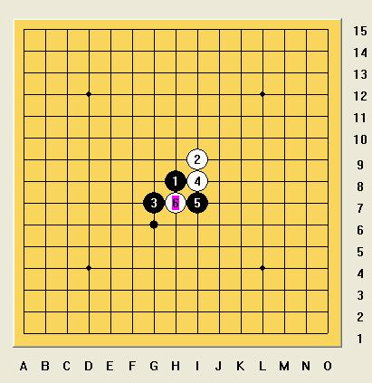
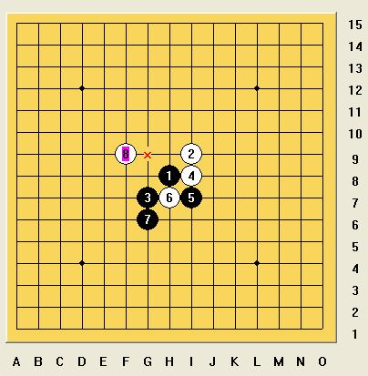

经典对局赏析
#1 经典对局赏析 作者：岳麓小棋后 发表时间：2009-6-2 16:46:21
经作者同意转载，诙谐ing。。。本文转载自 http://user.qzone.qq.com/550498057/blog/1239114452 * 蓝*的空间
晚上闲着没事，跑QQ游戏3手1房去逛逛，坐在我比较喜欢的57号桌举起手等待有人前来对弈，一分种过去了，还没有人来，看着其他桌上都是两个两个的下棋，真很羡慕啊，由于长时间没开始，系统把我往外弹了好几次，但我就是不相信命运，不相信这世界上没有人来和我下棋，于是继续举手着。。。
突然间对面的座位坐下了一个人，昵称叫“笨小孩”，双方互发个握手图后就开始了。我假先，用黑棋，我对对手不了解，她斜防白2，我只好开个斜月，斜月虽然黑大优，但是要必胜还是不简单，也不怕她交换。她没有交换，考虑了很久留了个2打。2打我对后面的变化也不很熟悉，感觉不到一点黑优的味道。但是出乎所有人的意料的是，她的白6下了一个非常规的一手如下图：

这6手给人的第一感觉就是必败的了。黑在3下一挡，白就困难了。我毫不犹豫的下在G6上，顿时信心大增！不过也挺佩服她的，敢于尝试新局面。她稍微思考了一下，又是一手令我诧异的棋，如下图：

如果只看一眼的话，你会觉得这手棋很平常，就是初学者下出来的，简单抓禁的。但是如果黑在7下面做棋，白正好有反先，恐怕能把黑给防住。所以我想了一下，下G8应该还可以，白G9后，黑H9后，黑有两个进攻点，而白棋在被动中。黑不胜也大大优了。果然，棋局如我的预料在发展。但是白12又一次把我的计划给粉碎了。如下图，把两个进攻线都给防住了！一时间陷入的僵局中。
/*760*90，创建于2012-2-9*/ var cpro_id = 'u761865';
#2 Re:经典对局赏析 作者：不知 发表时间：2009-6-2 16:51:13

#3 Re:经典对局赏析 作者：陨落之城 发表时间：2009-6-2 17:43:27

#4 Re:经典对局赏析 作者：aabb 发表时间：2009-6-2 18:25:13
=======上图对应的爱五子棋谱代码如下，以便你拆解：========
h8i9g7i8i7h7g6
======================================================
7必胜了。。
=======上图对应的爱五子棋谱代码如下，以便你拆解：========
h8i9g7i8i7h7g6f9g5g8i6
======================================================
9必胜了。。
=======上图对应的爱五子棋谱代码如下，以便你拆解：========
h8i9g7i8i7h7g6f9g8g9h9h10f8
======================================================
13必胜了。。
进攻有时候别太直接了。。防守有时候也是一种进攻。。
#5 Re:经典对局赏析 作者：不知 发表时间：2009-6-2 18:32:10
楼主所发的原文作者要表达不是说棋杀不杀的意思哦..应该是在描写自己网络实战心理的一篇文章.主要讲述自己在网络中人脑实战时的感受和心理变化..其实是一篇很不错的文章哦.这个7很多人都知道如何杀的.
#6 Re:经典对局赏析 作者：聂淼 发表时间：2009-6-2 19:43:12
他是不是骗你的哦，他这个至少都是初段水平，不会下的不会杀出来的